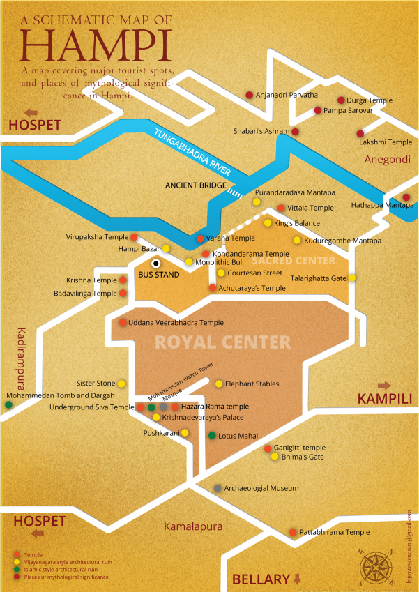

 Hampi (Apr 14 – Apr 16 2015)
Being the closest weekend retreat to Hyderabad, Hampi is visited often by locals. It’s also quite popular among youngsters for it’s a perfect destination for chilling out, among history and anthropology enthusiasts for its ruins are a UNESCO World Heritage Site and among foreigners for both the reasons.
Our plan to visit Hampi was quite abrupt. Both of us didn’t want to go back to our respective hometowns right after convocation considering we were to part ways for foreseeable future. We finalized Hampi since it was the closest and since we had not been there during our one whole year at ISB. Buses from Hyderabad to Hospet (12 Kms from Hampi) are readily available. Regarding the hotel, we wanted to go with the best – after all, we were newly committed and freshly convocated college graduates. We booked Royal Orchid Central Kireeti – just 3 Kms away from Hospet Bus stop. Both bus and hotel booking took us 45 minutes for a trip one day ahead of us – that’s how easy it is!
After an 8 hour journey, we reached Hospet at 4 in the morning. We had pre-requested the hotel for an early check-in. However, at the reception we were informed there wasn’t a room available till the actual check-in time. Both of us were slightly tired after the bus journey and having to give explanations to the hotel manager was quite a dampener. On top of that, we were given a suite but without AC. However, Royal Orchid made up for the slipup by shifting us to an AC suite at 10 AM and giving us free meals for the entire trip!
Day-1
After a grand breakfast and sumptuous lunch at the Royal Orchid 24X7 Café, we left for our ruins excursion at 2 PM.
The whole Hampi site is quite wide & vast and one cannot cover the same on foot, especially under the hot summer sun. We carried the map of all places to visit which the hotel provided and marked the best places we wanted to visit. Once we reached, Barney negotiated with an auto guy to take us to all the major visiting points and wait for us while we explored the site. We also hired a guide who claimed to have an authorized license from the state government. And it turned out a good decision after all because the information he gave us while vising each of the sites was not only rich with respect to its history but also very interesting.
The auto then took us to the King’s palace area which had gone underground completely. Lotus Mahal and Queen’s bath were two exquisitely wonderful monuments situated in the same area. There were many interesting stories regarding the king and two queens for whom he had built two separate structures for leisure.
We then moved to Elephant stable which is yet another exquisitely carved structure in Hampi. We got a lot of pictures clicked there owing to the perfect historical set up it offered.
Next, we moved to Vijay Vitthal Temple where we saw the huge stone chariot. The temple structure was half in ruins. However, we couldn’t help notice the detailed carvings on the pillars and how beautifully small structures were etched on stones making the temple an extremely beautiful archaeological site. The guide informed us that several Bollywood movies scenes and songs have been shot at the same location.
Our last historical destination for the day was Virupaksha temple – the most popular and recognized temple among the group of temples. They say people around Hampi, even big cities, believe that marrying at Virupaksha temple is auspicious and is considered to be complete.
After we ended the excursion, it was already around 6 PM. We then planned to sit for a bit at one of the most popular eateries at Hampi called “Mango Tree”. The place has a very goan feel to it with mattresses laid out on the floor along with floor tables and crowd mainly consisting of foreigners. The place serves awesome masala papad and ginger tea. Don’t forget to tell the waiters that you want tea with milk, in case you’re fond of the standard Indian well brewed tea with milk and strong ginger flavour. We also had pasta Arabiata which was quite cheesy and oily. However, the chillness in the whole ambiance made up for it!
We took at auto back to the hotel, rested for a while before enjoying free dinner at the hotel premises, followed by a walk around the hotel grounds. Day-1 well spent :)
Day-2
We thought of exploring the other side of Tungabhadra river the next day. We woke up just in time for buffer breakfast at the hotel cafe. Two things we loved at the Royal Orchid breakfast - their dosa and the buttermilk. Barney likes having a heavy breakfast and buffet laid at hotel every morning did complete justice to his needs. We left the hotel around 12 PM to the ghat from where boats leave at a regular intervals from one point to another. These boats are shared ones and help the tourists go from the south side to the north side of Hampi through crossing the river. However jazzy though it may sound, the boat ride is only 5 minutes long. If you seek more adventure, you could even take one of those small raft like boats called Coracle. They are available too at the same ghats from where all the other boats leave.
Once we reached the other side, we planned to get an activa on rent to go uphill to the Hanuman temple. Activa ride a lone hillside with lush green fields on one side, giant Deccan rocks on the other, and bright blue skies – what else does anyone need after all? Nothing at all! It was ultimate bliss!
You won’t have to look for these guys who give two wheelers on rent. They’ll approach you the moment you step out of the boat. Don’t forget to bargain with because their first quote is usually a bomb. After a bout of negotiation, we rented it for 300 bucks including 1 litre petrol (or so he claimed). We actually needed stop at one of the small shops in between to get half a litre of petrol filled over and above that since it didn’t seem he gave us the vehicle with complete fuel. Before riding up to the temple, we planned to stop by to grab a quick bite. We explored a few cafeterias on the roadside but most of them seemed to the shut due to the odd timing. Untimately, we landed at FunKy Monkey restaurant.
It’s not a super popular restaurant the way Mango Tree is; however, the look and feel of the place is very similar. It has jute mattresses placed on the floor along with floor cushions and floor tables. The place is full of colourful danglers and hangings across the walls and open spaces and invites a lot of expats. The joint also had a small section wherein a bookshelf contained a lot of interesting and popular books. People would pick their book and read it in peace sipping a hot cuppa overlooking the lake which had almost dried up during the summer season. We ordered juice, masala tea and a non veg pizza. The pizza was too cheesy but the masala chai compensated for it. After chilling there for an hour or so, we finally started our active ride to the temple. The surroundings are breathtakingly beautiful! We crossed sun kissed green fields with long light green grass. The Deccan by the other side gave a perfect contrasting shade to the picturesque surroundings. Cool breeze touching our faces during the ride on the sunny afternoon was a special add on to the overall experience. We visited a lake, then a waterfall (or so it was called) and then rode to the temple finally.
The Monkey Temple has around 700 stairs. We parked the active and started climbing the stairs. The temple lies on top of the Anjaneya Hill, which is claimed to be the birthplace of Lord Hanuman. It’s a little bit of an effort to climb up due to the elevation; however, the climb is worth the effort! Once you reach the top, a stupendous view of complete Hampi awaits you. The temple is small yet beautiful. It’s peaceful and serene. We went inside and prayed, clicked a few photographs with the beautiful view and came down.
Hello
Hello
Hello
Hello
Hello
Hello
Hello
Hello
Hello
Hello
Hello
{kind=link}
{kind=link}
{kind=link}